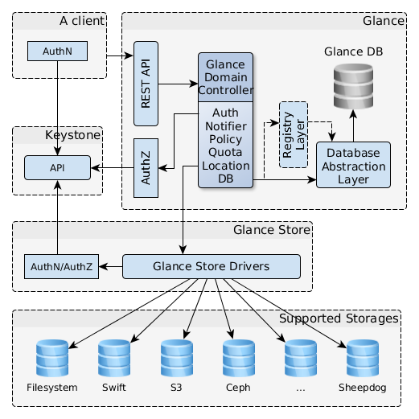

基本架构¶
OpenStack Glance是客户端/服务端架构，它通过给服务端处理的请求向用户提供REST API。
内部的服务器操作通过Glance域名控制器（Domain Controller）分层控制。每一层实线它自己的任务。
所有的文件操作都是使用glace_store库执行的，它负责与外部的后端存储或本地文件系统交互，并且提供统一的访问接口。
Glance使用基于SQL的中央数据库（Glance DB），它在系统中与所有组件共享。

Image 1. OpenStack Glance架构
Glance架构包含几个组件：
- 客户端 - 使用Glance服务器的任何应用。
- REST API - 通过ＲＥＳＴ暴露Glance功能。
- 数据库抽象层（DAL） - 统一Glance和数据通信的应用程序接口。
- Glance域名控制器 - 实现Glance主要功能：认证、通知、策略、数据连接的中间件。
- Glance存储（Store） - 组织Glance和多种数据存储的交互。
- 注册（Registry）层 - 通过使用不同服务组织域名和DAL进行安全通信的可选层。